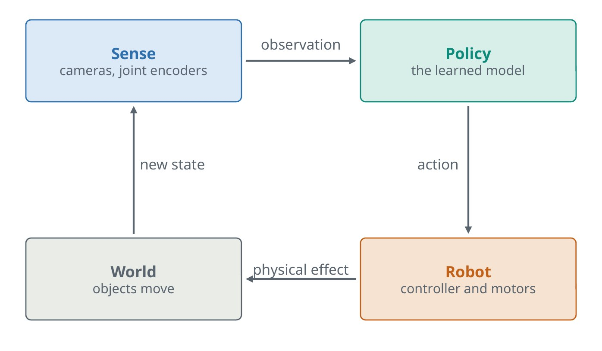
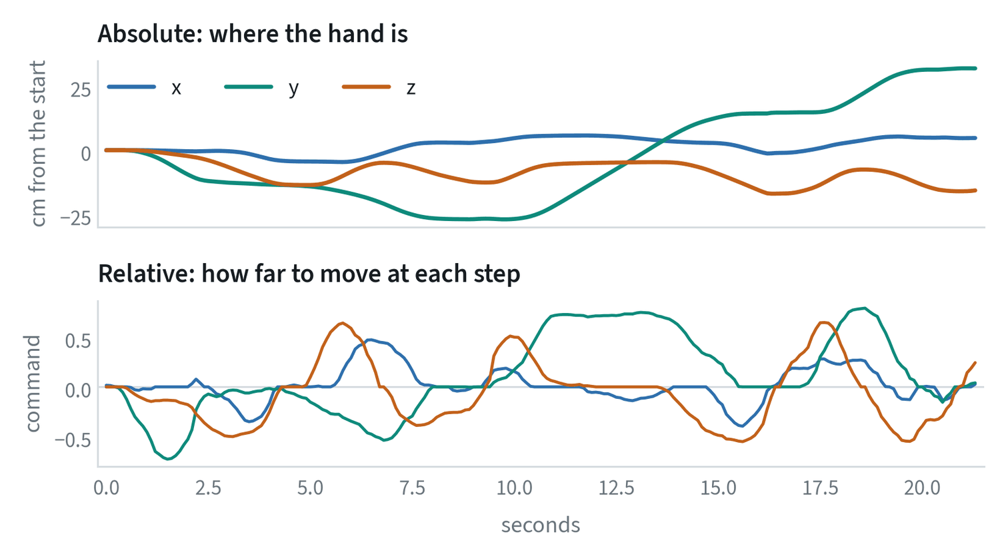
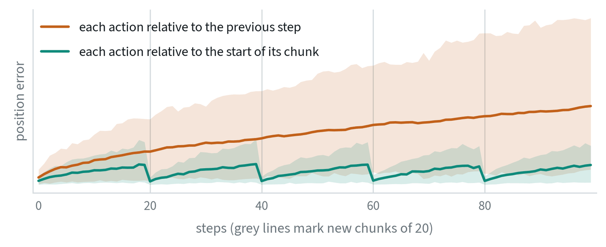
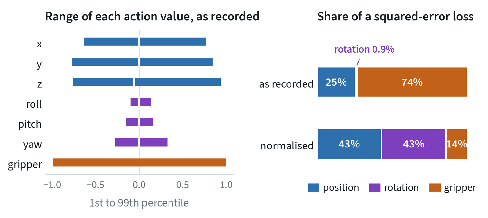
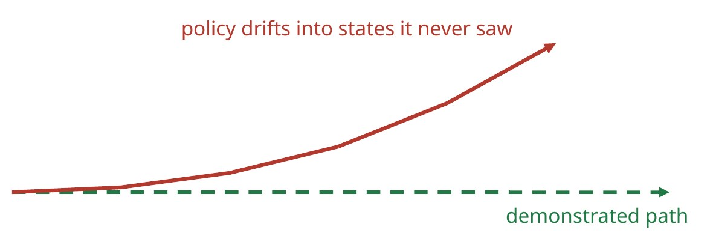
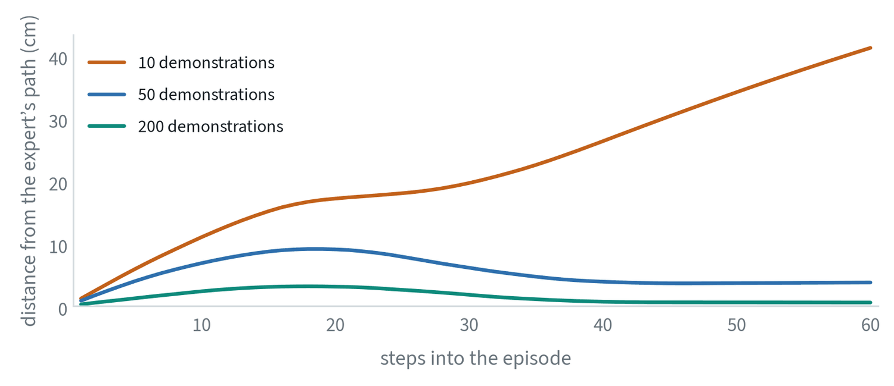
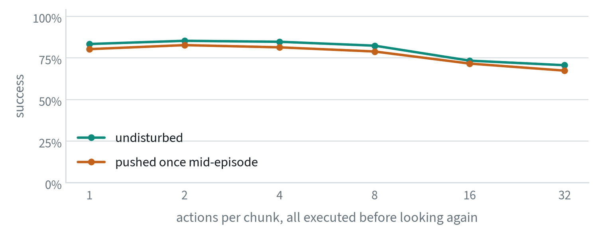
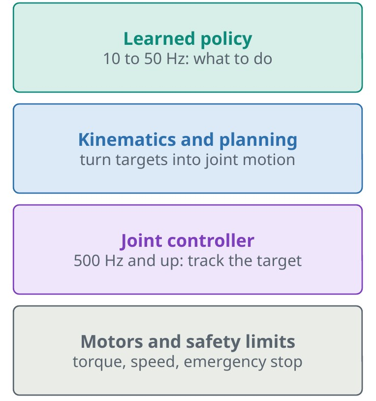

The control loop
A policy is a function from what the robot senses to what the robot should do next, called many times a second.


The observation is camera images plus the instruction. Proprioception is the robot’s own state: joint angles and how far the gripper is open. The action is the command sent to the robot. Learned policies typically run at 10 to 50 Hz, with a classical motor controller underneath running at 500 Hz or more.
This loop is the biggest conceptual shift for anyone coming from ordinary machine learning. A classifier’s test inputs do not depend on the classifier. A policy’s outputs change its own future inputs, so a small mistake moves the robot somewhere the model may never have seen.
Action spaces: what exactly does the policy output?
“Move the gripper to the cup” can be written as numbers in several ways. The choice affects how easily the policy learns, how errors build up, and whether data from two robots can be combined. There are four separate decisions.
Joints or hand
| Joint space | End-effector (Cartesian) space | |
|---|---|---|
| The policy outputs | A target for every joint | A position and rotation for the hand |
| Advantages | Exact; no solver; the whole arm’s shape is controlled, which matters near obstacles | Close to how tasks are described; the same numbers mean the same thing on different arms |
| Costs | Tied to one robot; the link between a joint and the task is indirect | Needs inverse kinematics underneath; the elbow goes wherever the solver puts it; rotation formats differ |
| Typical use | Two-arm and humanoid systems trained on one body | Single arms and cross-robot datasets |
Absolute or relative


An absolute action says where to be. Errors do not build up, and the numbers depend on where the robot and the objects are, so the policy has to learn the workspace. A relative action, also called a delta, says how far to move from here. The same motion looks the same anywhere, which helps generalisation, and each small error is added to the last.
Relative to what


A delta needs a reference, and there are two questions about it. The first is the starting point. Step-to-step deltas chain, so their errors accumulate. Policies that predict chunks usually express every action in the chunk relative to the pose at the moment of prediction, which stops the build-up at each new chunk. The second is the frame. “Move 2 cm forward” in the robot’s base frame and in the gripper’s own frame are different motions as soon as the gripper is tilted. Gripper-frame deltas transfer better between setups, and base-frame deltas are simpler to read.
Position, velocity, and what was recorded
Most learned policies output position targets and let the controller work out the speed. Some output velocities, which suits continuous motions and makes the result depend on timing. Separately, a dataset can store what was commanded or what was reached. Training on reached positions teaches the policy to ask for where the arm got to, which is always a little short of where it was sent, and the robot ends up moving sluggishly.
The gripper is its own small case: one number, open to closed, with the sign and the range differing between datasets. Before training on any dataset, write down its answer to all four questions. Mixing conventions does not raise an error. The robot just moves strangely. The fundamentals note covers the kinematics and rotation formats these choices rest on.
Normalise actions and state
The numbers in a robot action do not share a scale, and a network trained on them as recorded will quietly ignore the small ones.


In this dataset the gripper command is either −1 or +1, the position values are a few tenths, and the rotation values are a few hundredths. Under a squared-error loss, 74% of the training signal is about the gripper and under 1% is about rotation. The model would learn to open and close on time and never learn to turn the wrist.
The fix is to rescale every value to a common range before training, using statistics from the training set: subtract the mean and divide by the spread, or map the 1st and 99th percentiles to −1 and +1. The percentile form is less disturbed by rare extreme values. Three rules go with it.
- Save the statistics with the model. They are part of the checkpoint. A model with the wrong statistics outputs confident nonsense.
- Undo it on the way out. The policy predicts normalised actions. Convert them back with the same statistics before sending them to the robot.
- Normalise the body state too. Joint angles and gripper width have the same problem as actions.
A mismatch here is among the most common silent bugs in robot learning. Fine-tuning a pretrained policy with new statistics, or evaluating with the statistics of a different dataset, produces a robot that moves smoothly to the wrong place.
Imitation learning and its weak point
The dominant way to teach robots today is imitation: record a person doing the task, then train the policy to copy. In its simplest form, behaviour cloning, this is ordinary supervised learning with observations as inputs and demonstrated actions as targets.


Its weakness is compounding error. Each small mistake changes the next observation. Away from the demonstrations the policy has no data on how to recover, so the errors grow. The fixes are more varied data, demonstrations of recovery, and action chunking.
Behaviour cloning in symbols, and why errors compound
Behaviour cloning fits a policy to a dataset of observations and expert actions by maximum likelihood:
With a Gaussian policy of fixed variance this is mean squared error on the action. The catch is in the expectation. It is taken over the states the expert visited. At test time the policy visits the states its own actions lead to, and nothing in the objective covers those.


The policy trained on 10 demonstrations has a one-step action error of 1.8 cm when it is shown states from expert demonstrations. Run on its own, it ends 41 cm from where the expert would be. The one-step error says almost nothing about that outcome, because each error moves the policy to a state slightly further from the data, where the next error is larger.
The classical analysis makes this precise. If the policy errs with probability per step on the expert’s states, then over an episode of steps the expected number of mistakes can grow as
The quadratic term is the compounding. The linear bound is achieved by DAgger: run the current policy, ask the expert what it would have done in the states the policy reached, add those to the dataset, and retrain. The data then covers the states the policy actually visits. The note on the data flywheel measures the effect.
Action chunking

Instead of predicting one action, the policy predicts a short sequence of future actions in one call. This shortens the number of decisions in a task, keeps motion smooth, and gives a slow model time to compute the next chunk while the current one executes. Re-plan before the chunk ends to stay responsive. It is a simple trick, and it is a large part of why imitation learning started working well.
Chunking, measured
A chunking policy outputs future actions at once, . Two parameters matter: the chunk length , and how many of those actions are executed before the policy looks again.


On this task chunks of up to eight actions cost nothing, and longer ones lose accuracy because the policy is predicting further ahead from the same observation. A single push mid-episode costs three or four points at every length, since the policy cannot respond until its chunk runs out. The toy has no pauses or hesitations in its demonstrations, which is where chunking earns its largest gains on real data, so this figure shows the cost side of the trade more clearly than the benefit.
When chunks overlap, several predictions exist for the same moment. Temporal ensembling averages them, with weights that favour either older or newer predictions:
where is the prediction for time made steps ago. It smooths the joins between chunks at the cost of blending plans that may disagree.
How much of the past to show
A policy can be given only the current frame, or the last several. More history sounds strictly better and is not. Past frames reveal velocity and what happened behind an occlusion. They also make it easy for the policy to learn “keep doing what I was doing”, the copying shortcut shown in the first note, which scores well on recorded data and stalls on the robot.
The common setting is therefore short: one or two frames of images, the current body state, and a predicted chunk of future actions. When a task truly needs memory, add it deliberately, and check that success in the loop went up.
Reinforcement learning and the layer underneath
Reinforcement learning learns by trial and error from a reward. It needs enormous numbers of trials, so it works where a fast, accurate simulator exists: walking, running and balance. It struggles where trials are slow or unsafe, rewards are hard to write, and contact is hard to simulate, which describes most everyday manipulation. Imitation leads there, and reinforcement learning is increasingly used afterwards to raise an imitation policy’s success rate.


Common mistakes
- Mixing action spaces. The most common silent bug in robot learning.
- Collecting only perfect demonstrations. The policy then never sees how to recover from a mistake.
- Judging by offline error. Low error on recorded data says little about closed-loop behaviour.
- Skipping normalisation, or mismatching it. Check that the statistics used in training, saved in the checkpoint and applied on the robot are the same.
- Chaining step-to-step deltas over a long chunk. Express a chunk’s actions relative to its starting pose.
Terms
- Policy
- The function from observations to actions.
- Proprioception
- The robot’s sense of its own joints.
- Behaviour cloning
- Supervised learning of actions from demonstrations.
- Closed loop
- Actions affect the next observation.
- Normalisation statistics
- The per-value mean and spread, or percentiles, used to rescale actions and state.
- Delta action
- An action given as a change from a reference pose, not as a destination.
- Cartesian space
- Describing the hand by its position and orientation, as opposed to by joint angles.
- Covariate shift
- The difference between the states a policy was trained on and the states it visits when run.
- DAgger
- Collecting expert labels in the states the learned policy reaches, and retraining on them.
- Temporal ensembling
- Averaging the overlapping predictions that successive action chunks make for the same moment.